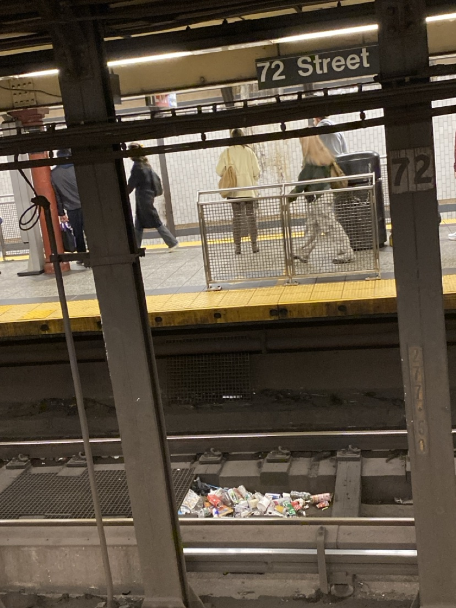
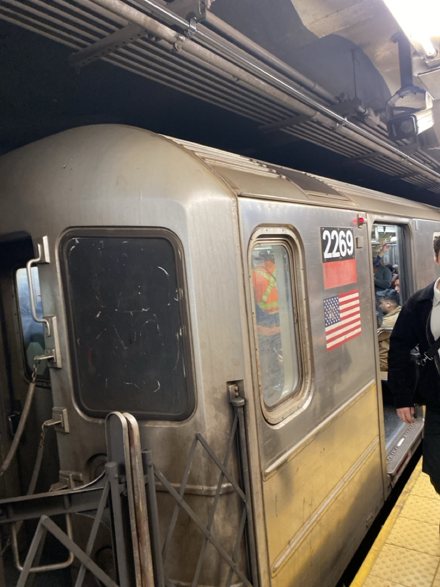
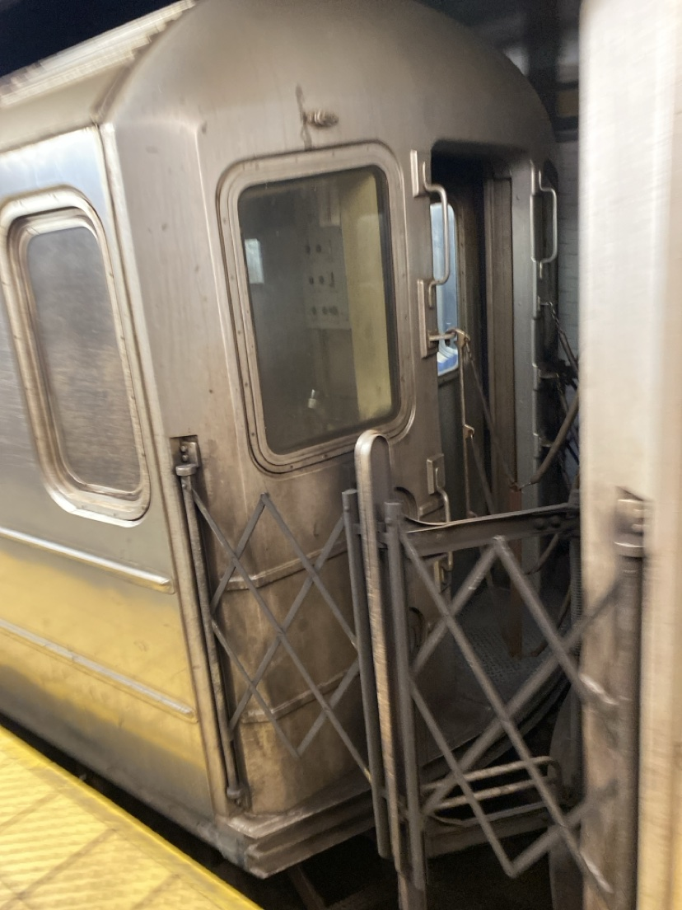
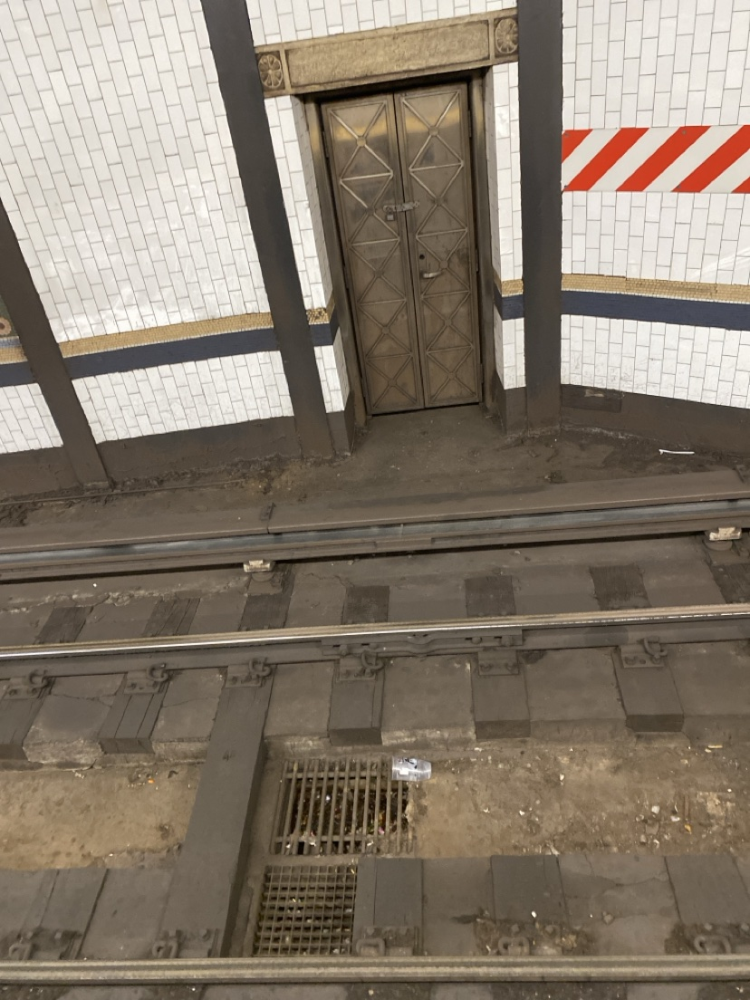

THE MTA IS
FALLING APART.
WE HAVE THE PHOTOS.
Wednesday morning. Our founder was standing on the platform — literally inside the MTA — sending these photos in real time. Trash piled on the tracks. A subway car that looks retired but isn't. A service door straight out of a horror film.
Richest city on earth. Late 2026. This is what billions in fares buy.

The tracks are a landfill. Cups, bottles, food containers — sitting on the rails at one of Manhattan's busiest stations, in plain view of every waiting rider.

Car 2269. Scratched-up windows, filthy steel, door pockets caked in grime. This car is in service right now, carrying New Yorkers to work.
HELL"

The parts you're not supposed to see. Between the cars, where nobody looks — except everyone does, every single day.

The gate to hell. An ancient riveted service door set into the wall across the tracks. It looks a century old — because it probably is.
THE WIFI IS
A RUMOR.
The MTA says the stations are connected. Try loading a page. The network appears, the captive portal spins, the signal dies between stations — and by the time anything loads, you're above ground again.
Approaching 2027, the subway's internet works about as well as its trash pickup. Riders pay $2.90 a swipe for the privilege of staring at a loading spinner in a tunnel.